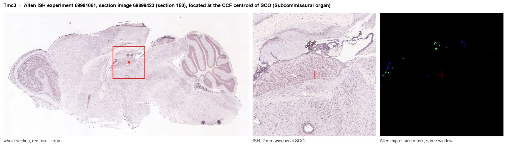
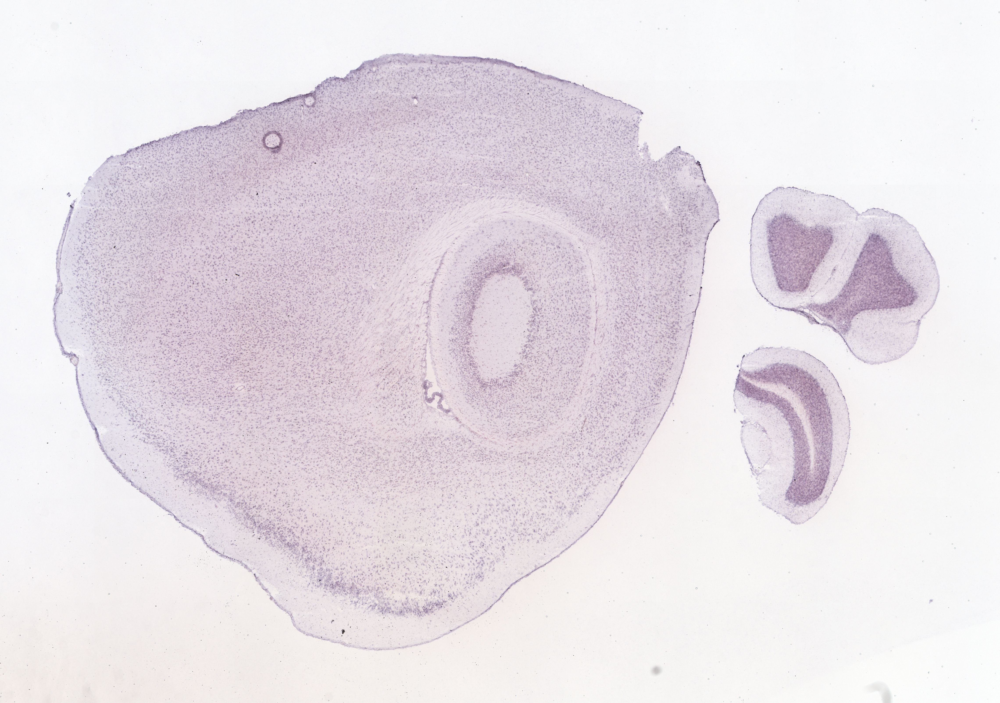
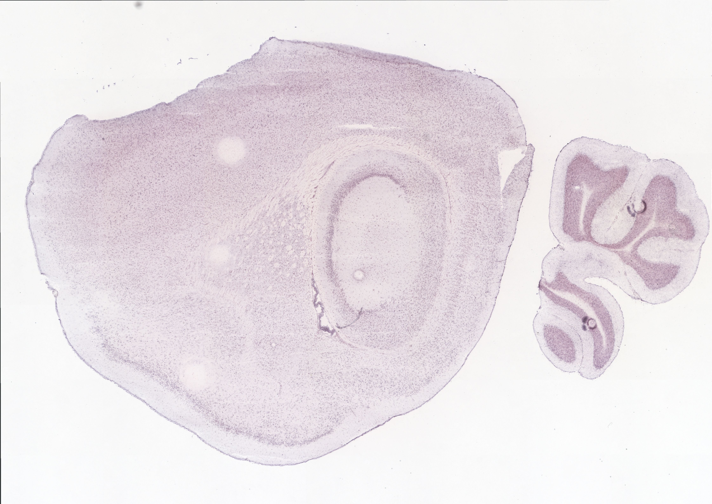
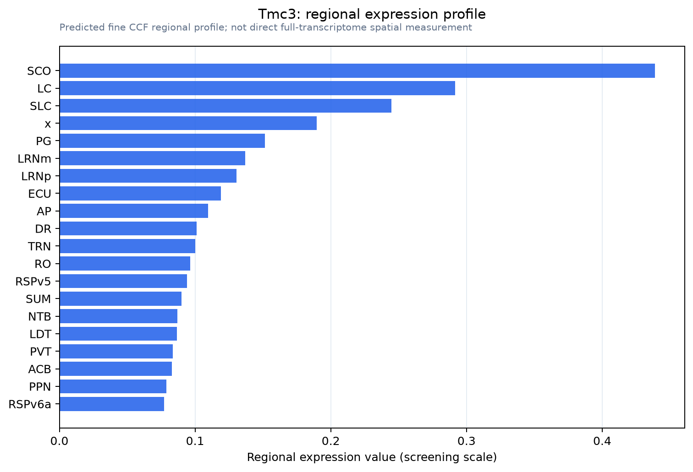

Tmc3
Transmembrane channel-like protein 3
Spatial tier: STRICT_EXCLUSIVE · Class: ION_CHANNEL · Top region: SCO (Subcommissural organ) · Positive regions: 7/554
46.5Discovery Score
38.3Targetability Score
CEvidence grade C
What this means: Tmc3: predicted fine-region profile is strict-exclusive, with 7 positive regions out of 554 (limit 12); direct spatial validation is required.
Function in SCO: evidence, prediction, innovation
- Gene function
- Tmc3 encodes transmembrane channel-like protein 3, one of eight mammalian TMCs; relatives TMC1 and TMC2 form the hair-cell mechanotransduction pore. TMC3 is an orphan with no confirmed conductance, predicted like other TMCs to be mechanosensitive or lipid-modulated; mouse RT-PCR finds it in pituitary, cerebellum and testis.
- Region function
- The subcommissural organ is a secretory ependymal gland under the posterior commissure at the third-ventricle/aqueduct junction, releasing SCO-spondin into CSF to form Reissner's fibre and shaping aqueduct patency, CSF flow and axial morphogenesis.
- Published in this region
- none No region-specific literature found. Closest: the original TMC family survey detected mouse Tmc3 in pituitary, cerebellum and testis without examining circumventricular organs (Keresztes et al. 2003), and TMC3, TMC5 and TMC7 contribute to pain and itch processing in sensory neurons (Braz et al. 2026).
- Predicted function
- Prediction: if TMC3 is mechanosensitive or lipid-gated, SCO enrichment would fit a transducer converting CSF flow, pressure or Reissner's fibre shear into cation influx and Ca2+-dependent SCO-spondin release. Knockouts should have normal baseline SCO morphology but fail to raise secretion under hydrocephalic pressure loading.
- Innovation
- ★★★★★ 5/5 TMC3 is among the least characterised channel-like genes and has never been placed in the flow-exposed SCO.
- Tools
- Tmc3 knockout-first alleles from KOMP/IMPC (Tmc3tm1a(KOMP)Wtsi) and Tmc3 mutants (Braz et al. 2026); Sspo-Cre/Sspo-CreER; GsMTx4 and gadolinium are non-selective, so use epitope-tagged knock-in or RNAscope.
- References
Direct evidence located at the region

Allen ISH experiment 69981061, section image 69899423 (section 150): the section that contains the CCF centroid of Subcommissural organ according to the Allen image-to-atlas alignment (reference_to_image), with a 2 mm window around that point. Left: whole section, red box = window. Middle: ISH signal. Right: Allen's expression-mask view of the same window. open this image in the Allen viewer
Look it up yourself: Allen Mouse Brain ISH for Tmc3Allen reference atlas: SCO (structure 599626923)ABC Atlas MERFISH viewer(in the ABC Atlas choose dataset MERFISH-C57BL6J-638850-CCF, colour cells by gene "Tmc3" or by parcellation_substructure "SCO")All genes confined to SCO + 3-D brain
Direct spatial evidence
MERFISH REGION LOCATOR

DIRECT ALLEN ISH

DIRECT ALLEN ISH

Regional expression figure

Predicted WMB × fine-CCF profile; not direct full-transcriptome spatial measurement.
Spatial profile
Evidence and specificity
- Evidence status
- PREDICTED_FINE
- Direct sources
- None; predicted localization only
- Exclusive threshold
- 12 positive regions out of 554
- Spatial specificity
- 0.361
- Top-region fraction
- 0.128
- Filter status
- PASS
Interpretation limits
- Cell-type-to-region projection is imputed expression, not direct spatial measurement.
- Adult reference atlases do not establish stability across age, sex, strain, state, or disease.
- Transcript abundance does not guarantee protein abundance or genetic-tool performance.